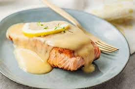

Beurre blanc

Description
Butter sauce with wine reduction.
Ingredients
- Clarified butter
- White wine
- Schallots Choppedtou
- Black pepper corn
- Bay leaves
Way to do
- Roast the scallots
- Add the wine, Bay leave and few pepper corn
- Reduce 1/3
- Filter
- Incorporate the butter slowly to avoid split add water or lemon juice
Return to main page